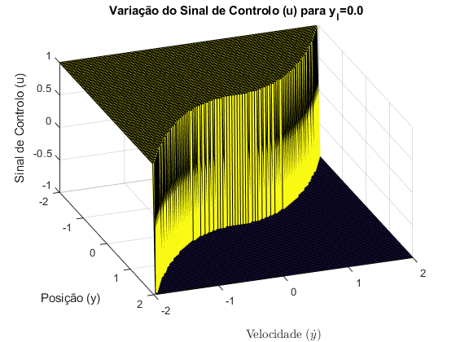

Exercício 10
%Reset do ambiente de trabalho clear; close all; %Valores do intervalo +-yl no qual a comutação se torna linear para testar yl = [0, 0.2, 0.4]; %Vector de posições e velocidades para criar meshgrid de teste do %controlador y = linspace (-2, 2); dy = linspace (-2, 2); [Y, dY] = meshgrid(y, dy); for n = 1:length(yl) %Inicialização de u com zeros em todos os indexes U = zeros(size(Y)); %Calculo dos k's k1 = 1/yl(n); k2 = sqrt(2*k1); %Subsys por ramos com entrada de -y idx = find(abs(Y) <= yl(n)); U(idx) = (k1/k2)*-Y(idx); idx = find(abs(Y) > yl(n)); U(idx) = sign( -Y(idx) ).*(sqrt(2.*abs( -Y(idx) ))-(1/k2)); %Subtracção de dy U = U - dY; %Aplicação do ganho k2 U = U * k2; %Filtro de saturação U(U > 1) = 1; U(U < -1) = -1; figure; surf(y, dy, U); view(70, 40); grid on; title(sprintf('Variação do Sinal de Controlo (u) para y_l=%.1f', yl(n))); xlabel('Posição (y)'); ylabel('Velocidade ($\dot{y}$)', 'Interpreter', 'latex'); zlabel('Sinal de Controlo (u)'); end
Comentários:
Pela análise do diagrama de blocos da Fig.5 do relatório verificou-se que o sistema consistia do Subsys dado pela equação de dois ramos:
,
,
Alimentado pela subtração entre o sinal de Referência e y que neste caso é dado por:

De seguida à saída do Subsys é subtraído gerando um sinal ao é aplicado um ganho k2 que por sua vez é filtrado limitando os valores superiores a 1 e inferiores a -1.
Este sistema tem um princípio de funcionamento semelhante ao da questão anterior diferindo nos pontos dentro do intervalo de yl no qual a derivada da função do Subsys não tende para infinito, ou seja, não existe a mesma discrepancia entre valores perto da origem, logo em vez da cabeça do disco oscilar constantemente à volta da orgirem (caso da Fig.1) temos uma desacelaração mais suave à medida que se aproxima do valor de referência evitando assim o comportamento de chattering. Também podemos concluir da Fig.2 e Fig.3 que quanto maior for esse intervalo, yl, mais sauve é a desacelaração. Por isso deve se escolher yl de maneira a não prejudicar muito o tempo que a cabeça leva a chegar a posição de referência, ou seja, o mais pequeno possível que evite o comportamento de chattering.
Este é um melhor sistema que o anterior.